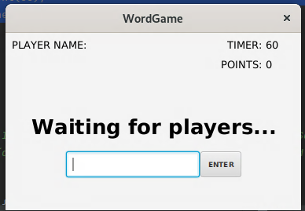
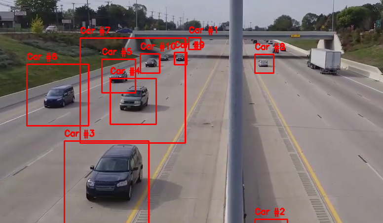
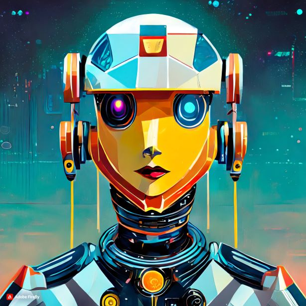
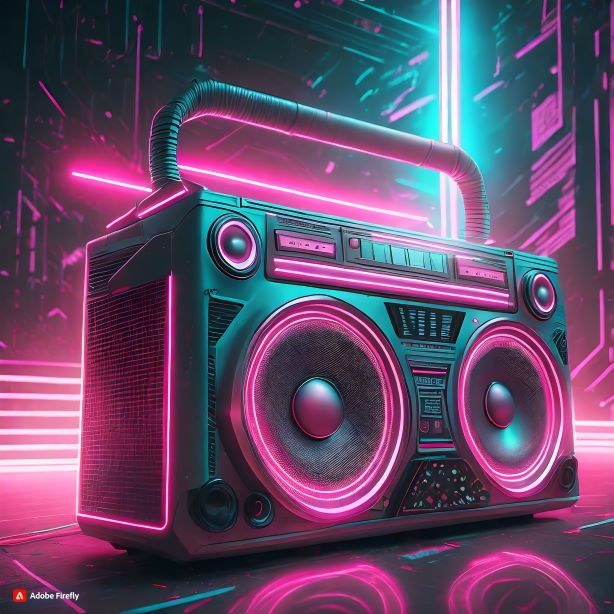

Infrared Security System


Web-Connected Thermometer


2023 UIowa Hackathon (UI Hydroinformatics) - Dubious Studio - 3rd place team win


Robotics Club - Depth Mapping and SLAM Point Cloud Extraction for Rover Autonomy


Joystick Controlled Audio Feedback Car - Team Project


Stable Diffusion Custom Dreambooth Model-


Javascript Fighting Game

Multiplayer Word Game - Semester Team Project

Computer Vision Car Detection Application

Jarvis AI Assistant
